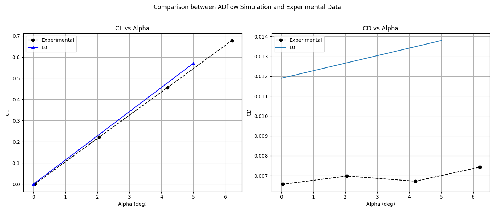

Usage
The above script runs a simulation of the NACA 0012 Airfoil, and is included in the examples folder.
To run the above python script:
- Copy the examples directory to a different location:
- Navigate into the directory:
- Run the python script with a single processor:
or run with multiple processors
Note:
- Example input yaml files to run on personal computers are stored in
examples/inputsdirectory, and for Great Lakes HPC cluster, an example file is stored inexamples/inputs/GL - Make sure to modify the file and file paths ti absolute paths in the yaml file when running in a docker container.
Use examples/inputs/naca0012_sinInfo.yaml or examples/inputs/GL/naca0012_sinInfo.yaml(for Great Lakes) to test the package with NACA0012 airfoil.
After execution, the following results are expected which are saved in the specified output directory.
- A copy of the input yaml file in the output directory.
overall_sim_info.yamlin the output directory.ADflow_Results.pngin each experimental level directory, that is a plot comparing CL, and CD values at all refinement levels to the expeimental data(if provided).

ADflow_output.csvin each refinement level directory, that is a file containg Angle of Attack(AoA), CL, and CD data.aoa_<aoa>.yamlin aoa level directory, that contains the simulation information particular to that angle of attack.- Default ADflow outputs: A tecplot file, a CGNS surface file, and a CGNS volume file.
Example usage
Here’s a quick example of how to use simulateTestCases:
Running Simulations
from simulateTestCases.run_sim import run_sim
# Initialize the runner with configuration file
sim = run_sim('<path-to-input-yaml-file>')
# Run the simulation series
sim.run()
# Analyze results
sim.post_process()
To read existing simualtion data or generate data
The function get_sim_data can be used to get existing simulation data that was generated after a simulation, or to generate new simulation data by passing a run_flag. If run_flag is 1, then the function runs the simulation and outputs the data as a dictionary.
The function provides the flexibility of using the input YAML file or the overall_sim_info.yaml file that is generated and stored in the outptut directory after the completion of simulations, as inputs.
from simulateTestCases.utils import get_sim_data, RunFlag
# Specify the path to the input file.
info_file = 'inputs/naca0012_simInfo.yaml'
# Call the function to get simulation data as a dictionary
sim_data = get_sim_data(info_file, RunFlag.skip)
# Print the dictionary
print(sim_data)
Additional Information
Grid Files
Grids for NACA 0012 and Mc Donnell Dolugas 30P-30N are provided under examples/grids in the examples directory. The other grids (CRM clean, and DLR High-Lift) including Naca 0012 and 30P-30N can be found at Dropbox folder.
Experimental data
Experimental data for NACA 0012 and Mc Donnell Dolugas 30P-30N are provided under examples/exp_data in the examples directory. The other dat (CRM clean, and DLR High-Lift) including Naca 0012 and 30P-30N, and their references can be found at Dropbox folder.